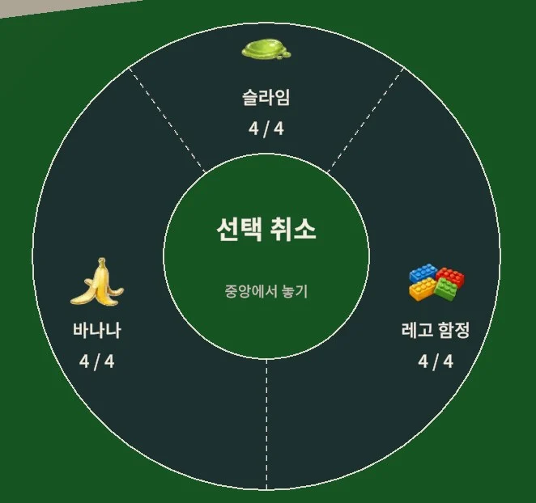

역할별 목표 안내 · 팀 테스트에서 게임이 시작돼도 무엇을 해야 할지 모르겠다는 의견이 나왔습니다. 모두에게 뜨던 ‘역할 목표를 수행하세요’를 집주인에게는 ‘금고를 지키세요’, 도둑에게는 ‘침입해서 금고를 터세요’로 나눠 썼습니다. 준비 단계에는 각자 먼저 할 행동을 안내했습니다.
함정 선택 메뉴 · 집주인의 원형 메뉴에서 세 칸의 너비가 제각각인 문제를 발견해, 각 칸을 120도로 나누는 수정안을 제안했습니다. 수정 후 함정 6종을 하나씩 골라 선택한 종류가 게임에 전달되는지, Esc로 취소하면 선택 요청을 보내지 않는지 테스트했습니다.

